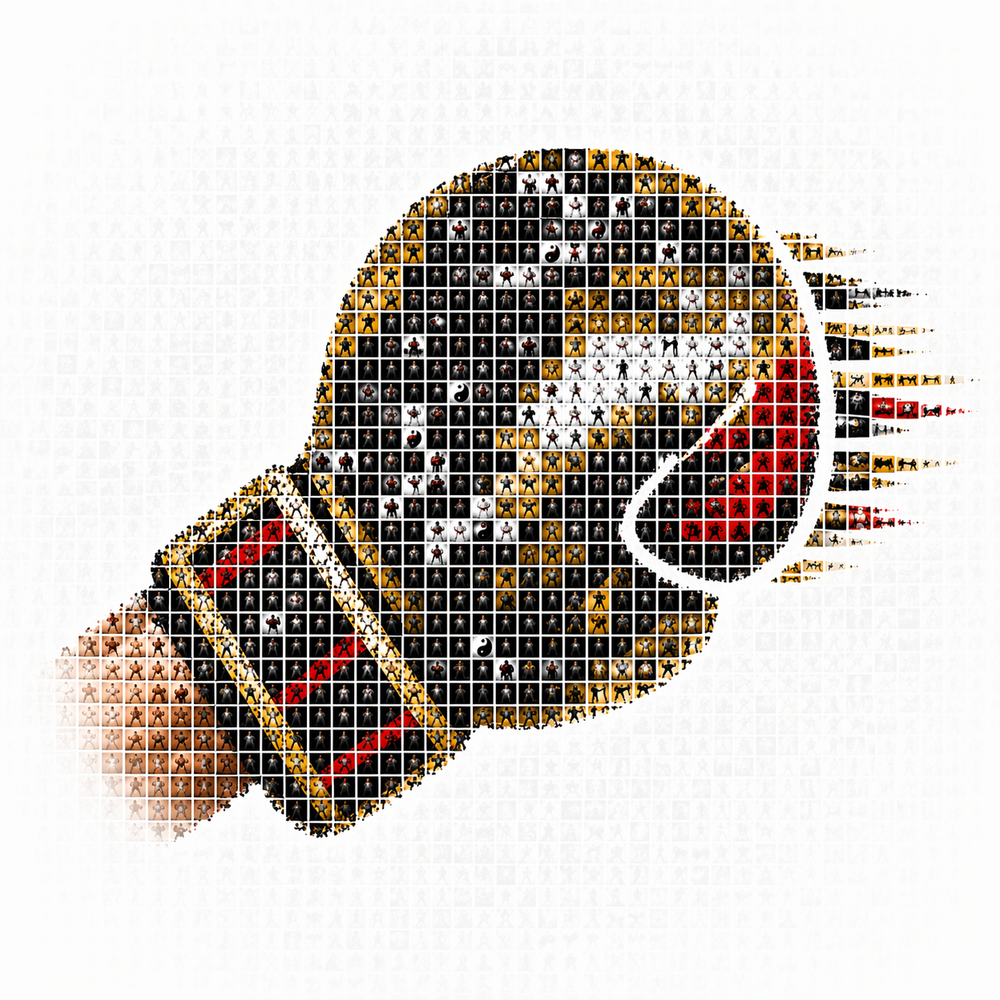
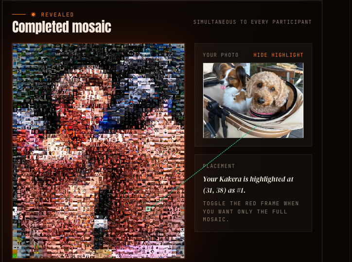

// STORAGE
Walrus Persistence
Walrus で永続保存。
Final mosaic and target images live on decentralized storage; `blob_id` is the canonical identifier.

A gift, both ways — not ownership, not speculation.
ファンの応援が、選手の力になる。
“BUILD A NEW WAY TO CONNECT
ONE CHAMPIONSHIP WITH JAPANESE FANS.”
「ONE Championshipと日本のファンをつなぐ、新しい方法を作れ」
ファンの写真が、そのまま肖像になる。
UX is Web2. The backend is fully on-chain. 摩擦ゼロ、裏側はオンチェーン。
Enoki Sponsored Tx covers every transaction. SUIトークン不要・ガスゼロ。
The portrait rises everywhere at once.その瞬間、全員、同じ画面を見る。
The 2,000th photo becomes a distributed trigger. Every participant's browser finalizes the mosaic simultaneously — the finished portrait rises on every device at once.

An untradeable proof of presence. 欠片 — ファンの証。
No other stack pulls this off. この組み合わせでしか成立しない。
It’s already running. ここから実際に動いているものをご覧ください。
One mechanism, many nights. 同じ仕組みが、違う夜を転がせる。
Drop into ONE SAMURAI—tomorrow.
No setup. No prep. Just one QR.
明日のONE SAMURAIに、そのまま載る。
あなたの笑顔が、選手の力になる。